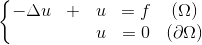
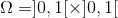
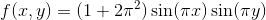
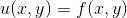
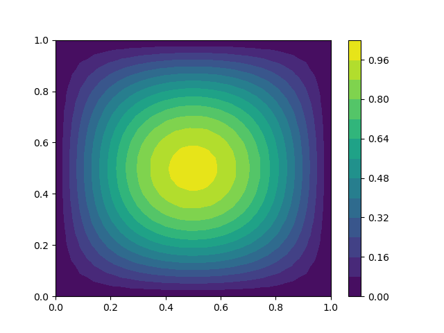
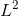

2019 - 2020 : Projet / Rendu
Vincent Liu - Karl Mongosso | MAIN 5
Problème de référence

Nous prenons le carré unitaire  et
 de sorte que la solution exacte est connue et vaut

Solution approchée (éléments finis P1)

Solution exacte connue
Analyse de l'erreur
On calcule l'erreur en norme  entre la solution exacte et la solution approchée pour le problème de référence.
Voici la courbe de l'erreur en fonction de h en échelle log-log.
On calcule ensuite la pente de la courbe:
pente = 0.2
On en déduit la vitesse de convergence par rapport au pas de maillage h:
pente = 0.2
Tableaux des valeurs des erreurs
| h | Erreur |
|---|
| ! | 33 |
| " | 34 |
| # | 35 |
| $ | 36 |
| % | 37 |
| & | 38 |
| ' | 39 |
| ( | 40 |
| ) | 41 |
| * | 42 |
| + | 43 |
| , | 44 |
| - | 45 |
| . | 46 |
| / | 47 |